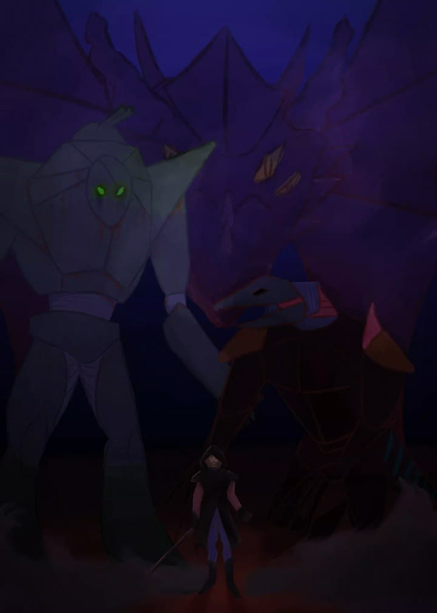

Cześć! Witaj na mojej stronie!
Jestem Pawlik, na codzień zajmuję się programowaniem gier i tworzeniem grafiki. O tym właśnie jest ta strona.
Modele 3D
Jeden z moich pierwszych (zachowanych) modeli: GLaDOS z gry Portal 2.
Zacząłem tworzyć modele 3d w 2018 roku, w czasie moich początków tworzenia i programowania gier.
W pierwszych miesiącach nauki używałem modeli z internetu i układałem je w programie SweetHome3D, programie do aranżacji wnętrz.
Ma on wbudowaną funkcję robienia zdjęć zaprojektowanych pokoi i wykorzystywałem ją do tworzenia statycznych grafik, następnie importowałem te pliki do clickteam fusion, silnika do tworzenia gier 2D
Od początku inspirowały mnie horrory wszelkiej maści, szczególnie seria gier five Nights at Freddy's. Dlatego właśnie moją pierwszą grą miał być survival horror.
Moją pierwszą stycznością z modelowaniem 3d była propozycja pewnego grafika, który zasugerował mi stworzenie mojej gry, jednak szybko stracił zainteresowanie i rozpocząłem naukę 3d samodzielnie.
Pierwszym programem do modelowania jakiego spróbowałem był Cinema 4D, jednak uznałem ten program za zbyt skomplikowany i postanowiłem nauczyć się obsługiwać Blendera, który w tamtym czasie był w wersji 2.79.
W pierwszych miesiącach nauki używałem modeli z internetu i układałem je w programie SweetHome3D, programie do aranżacji wnętrz.
Ma on wbudowaną funkcję robienia zdjęć zaprojektowanych pokoi i wykorzystywałem ją do tworzenia statycznych grafik, następnie importowałem te pliki do clickteam fusion, silnika do tworzenia gier 2D
Od początku inspirowały mnie horrory wszelkiej maści, szczególnie seria gier five Nights at Freddy's. Dlatego właśnie moją pierwszą grą miał być survival horror.
Moją pierwszą stycznością z modelowaniem 3d była propozycja pewnego grafika, który zasugerował mi stworzenie mojej gry, jednak szybko stracił zainteresowanie i rozpocząłem naukę 3d samodzielnie.
Pierwszym programem do modelowania jakiego spróbowałem był Cinema 4D, jednak uznałem ten program za zbyt skomplikowany i postanowiłem nauczyć się obsługiwać Blendera, który w tamtym czasie był w wersji 2.79.
Od tamtego czasu wiele się zmieniło, nabrałem doświadczenia i jestem teraz w stanie tworzyć modele stosunkowo szybko i wysokiej jakości.
Model Moonie stworzony do gry.
Model Salena stworzony do gry.
Zaciekawiły Cię moje modele?
Może chciałbyś sam spróbować?By zacząć tworzyć grafikę 3D wystarczy pobrać Blender za darmo!
W internecie jest wiele tutoriali i poradników, ja na tej stronie zaprezentuję też mały przykład jak wygląda praca w blenderze.
Stworzenie przykładowego modelu w blenderze 3D:
Widok na nowo otwarty projekt w blenderze.
Na początku zaznaczamy kostkę lewym przyciskiem myszy i z okna modyfikatorów (niebieski klucz po prawej) wybieramy "subdivision", po czym klikamy prawym przyciskiem myszy na model i wybieramy "shade smooth".
Shift+D albo kliknięcie prawym przyciskiem i wybranie opcji "Duplicate objects" zduplikuje obiekt.
Tworzymy nóżki przesuwając kostkę (przycisk g) a następnie zmniejszając ją (przycisk s). Następnie wchodzimy w tryb edycji (tab > edit mode) i klikając ctrl+r dodajemy krawędzie wokół modelu. Następnie przeciągamy je w dół podwójnie klikjąc g i przesuwając myszką. Dodajemy też modyfikator "mirror", z "mirror object" ustawionym na większą kostkę.
Używając skalowania, przeciągania oraz dodawania krawędzi tworzym piurka oraz skrzydełka.
(podpowiedź - kliknięcie x, y albo z podczas gdy jesteśmy w trybie skalowania, przeciągania albo obracania spowoduje, że wszystkie zmiany odbędą się w osi x, y albo z, zależnie od klikniętego przycisku).
(podpowiedź - kliknięcie x, y albo z podczas gdy jesteśmy w trybie skalowania, przeciągania albo obracania spowoduje, że wszystkie zmiany odbędą się w osi x, y albo z, zależnie od klikniętego przycisku).
Następnie dodajemy oczka oraz dziubek.
Na samym końcu klikając wybraną tutaj opcję w kształcie kuli tworzymy nowe pole na materiał wciskając "+" znajdujący się po prawej stronie okna. Następnie wyświetli sie opcja "new". Klikamy ją i dodaje to materiał. Wtedy wystarczy zmienić "surface" z "Principled BSDF" na "Emission" oraz zmianę koloru na dowolny.
Powtarzamy to dla każdego obiektu i gotowe!
Powtarzamy to dla każdego obiektu i gotowe!
Blender oferuje wiele modyfikatorów i opcji, bardzo trudno poznać wszystkie, jednkaże ten program jest na tyle intuicyjny, że znając podstawowe skróty można tworzyć dość skompliowane i ładne modele!
Polecam blendera każdemu kogo interesuje grafika 3D.
Polecam blendera każdemu kogo interesuje grafika 3D.
Gry
Mimo, że to chęci do tworzenia gier zamiast grania w nie były powodem, dla którego Szedłem w kierunku grafiki, to po paru nieudanych próbach stworzenia i wydania własnych gier zrobiłem sobie przerwę od programowania i skierowałem całą uwagę na grafikę
3d. Dopiero w 2019 roku w drugiej klasie liceum powróciła moja chęć do programowania. Zamieniłem używany przeze mnie dotychczas Clickteam Fusion na bardziej popularny program Unity Engine. Od tamtego czasu powstało kilka pomniejszych gier,
tworzonych głównie na potrzeby konkursowe lub z czystej chęci.
Claustrophobia
Claustrophobia była pierwszą grą którą miałem nadzieję skończyć. Tworzona była na silniku Clickteam Fusion, ale grafik opuścił projekt i byłem zmuszony nauczyć się modelowania, zanim mógłbym kontynuować projetk. Do dziś jednak nie udało mi się ukończyć
gry.
CUBE-Testing area one
CUBE-Testing area one była pierwszą grą jaką stworzyłem na jakiś konkurs.
Polega na przenoszeniu kostek z miejsca na miejsce, a została stworzona w pięć dni.
Polega na przenoszeniu kostek z miejsca na miejsce, a została stworzona w pięć dni.
Last Chrismtas

Last Christmas to gra w której wcielasz się w elfa, próbującego pozbierać porozrzucane prezenty by uratować święta.
Gra została stworzona w tydzień, z okazji świątecznego konkursu.
Gra została stworzona w tydzień, z okazji świątecznego konkursu.
A Murder In Time
A Murder In Time jest grą w której podążasz śladem mordercy odpowiedzialnego za śmierć twojej rodziny. Nie jest to jednak zwykła sprawa, którą tak słynny detektyw jak ty potrafiłby bez problemu rozwikłać. Morderca zdaje się podróżować w czasie, umykając
przed tobą w ostatniej chwili.
Gra ta została stworzona w tydzień na konkurs.
Gra ta została stworzona w tydzień na konkurs.
Obecnie pracuję nad grą eksploracyjną o szkole.
Sztuka Cyfrowa
W 2021 powróciłem do mojej pasji z młodości bądącej rysowaniem. Zamiast używać papieru zainteresowałem się pracą cyfrową, w pełni na komputerze. Używam takich programów jak Medibang Pro oraz Clip Studio Paint. Niedawno zakupiłem również swój pierwszy
tablet graficzny.
